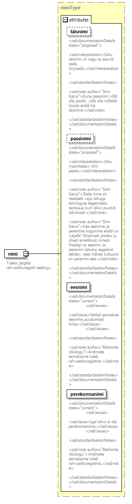

| diagram |  |
||||||||||||||||||||||||||||||||||||||
| namespace | http://www.ern.ee/õpe | ||||||||||||||||||||||||||||||||||||||
| type | extension of isikType | ||||||||||||||||||||||||||||||||||||||
| properties |
|
||||||||||||||||||||||||||||||||||||||
| children | nimi erivajadus | ||||||||||||||||||||||||||||||||||||||
| used by |
|
||||||||||||||||||||||||||||||||||||||
| attributes |
|
||||||||||||||||||||||||||||||||||||||
| source | <xs:complexType name="isikuandmedType"> <xs:complexContent> <xs:extension base="isikType"> <xs:sequence> <xs:element name="erivajadus" type="klassifikaatorType" minOccurs="0" maxOccurs="unbounded"/> </xs:sequence> <xs:attribute name="alalineElamisluba" type="xs:boolean"> <xs:annotation> <xs:documentation> <xsd:documentationDetails> <xsd:interpretation>märgib alalise elamisloa olemasolu.</xsd:interpretation> <xsd:useCases> <xsd:useCase time="2017-12-18T11:10:00" author="ERN kooslek 2017-12-18">Õiguste määramine</xsd:useCase> <xsd:useCase time="2017-12-18T11:10:00" author="ERN kooslek 2017-12-18">Stipendiumite määramine</xsd:useCase> </xsd:useCases> </xsd:documentationDetails> </xs:documentation> </xs:annotation> </xs:attribute> </xs:extension> </xs:complexContent> </xs:complexType> |
attribute isikuandmedType/@alalineElamisluba
| type | xs:boolean | ||
| annotation |
|
||
| source | <xs:attribute name="alalineElamisluba" type="xs:boolean"> <xs:annotation> <xs:documentation> <xsd:documentationDetails> <xsd:interpretation>märgib alalise elamisloa olemasolu.</xsd:interpretation> <xsd:useCases> <xsd:useCase time="2017-12-18T11:10:00" author="ERN kooslek 2017-12-18">Õiguste määramine</xsd:useCase> <xsd:useCase time="2017-12-18T11:10:00" author="ERN kooslek 2017-12-18">Stipendiumite määramine</xsd:useCase> </xsd:useCases> </xsd:documentationDetails> </xs:documentation> </xs:annotation> </xs:attribute> |
element isikuandmedType/erivajadus
| diagram |  | ||||||||||||||||||
| namespace | http://www.ern.ee/õpe | ||||||||||||||||||
| type | klassifikaatorType | ||||||||||||||||||
| properties |
|
||||||||||||||||||
| attributes |
|
||||||||||||||||||
| source | <xs:element name="erivajadus" type="klassifikaatorType" minOccurs="0" maxOccurs="unbounded"/> |
XML Schema documentation generated by XMLSpy Schema Editor http://www.altova.com/xmlspy